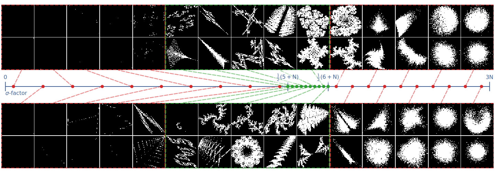
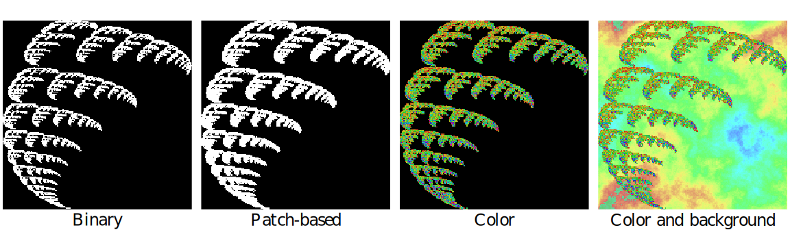
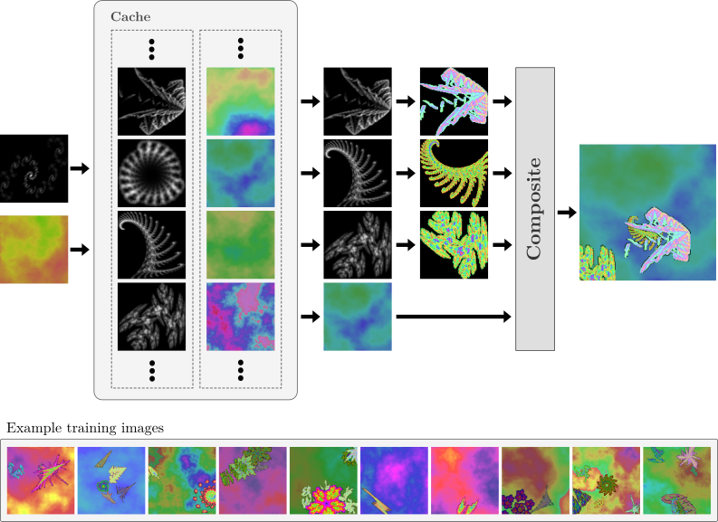
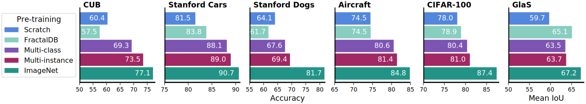
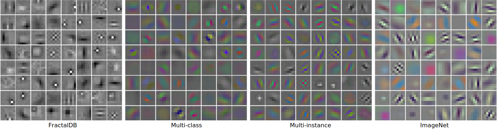

Interactive IFS Viewer
We provide an interactive web interface for exploring and manipulating affine iterated function system using our SVD parameterization.

The deep neural networks used in modern computer vision systems require enormous image datasets to train them. These carefully-curated datasets typically have a million or more images, across a thousand or more distinct categories. The process of creating and curating such a dataset is a monumental undertaking, demanding extensive effort and labelling expense and necessitating careful navigation of technical and social issues such as label accuracy, copyright ownership, and content bias.
What if we had a way to harness the power of large image datasets but with few or none of the major issues and concerns currently faced? This paper extends the recent work of Kataoka et. al (ACCV 2020), proposing an improved pre-training dataset based on dynamically-generated fractal images. Challenging issues with large-scale image datasets become points of elegance for fractal pre-training: perfect label accuracy at zero cost; no need to store/transmit large image archives; no privacy/demographic bias/concerns of inappropriate content, as no humans are pictured; limitless supply and diversity of images; and the images are free/open-source. Perhaps surprisingly, avoiding these difficulties imposes only a small penalty in performance. Leveraging a newly-proposed pre-training task—multi-instance prediction—our experiments demonstrate that fine-tuning a network pre-trained using fractals attains 92.7-98.1% of the accuracy of an ImageNet pre-trained network. Our code is publicly available.
We propose an SVD-based approach for sampling IFS codes that is efficient and always yeilds systems that converge (by constraining the singular values). We also propose a heuristic for sampling singular values so that the resulting fractal geometry exhibits desirable properties.
We find that incorporating color and randomly generated backgrounds leads to better representation learning.
We introduce the multi-instance prediction pre-training task, and show that it leads to better performance on fine-tuning tasks. Multi-instance prediction uses images with multiple fractals, and has to predict the presence or absence of each fractal class, similar to binary attribute prediction.
Using a combination of efficient Numba code and a rendering cache, we are able generate all training images on-the-fly during training, without having to generate or store any images up front. The dataset is thus very efficient to store and transmit.
Our pre-training methods lead to networks that can achieve performance much better than training from scratch, and approaching the performance of ImageNet pre-training.
Multi-instance prediction learns first-layer filters that are very similar to those learned from ImageNet pre-training.
We provide an interactive web interface for exploring and manipulating affine iterated function system using our SVD parameterization.
After camera-ready submission, we became aware of a bug in our implementation such that the total number of systems used was always set to 1,000 (and thus 1 system per class), ignoring the value specified in the configuration files—thanks to Cheng-Hao Tu for making us aware of this. We have updated the arXiv version of the paper to reflect this, and removed the results that depended on the assumption of differing numbers of classes or systems per class (just one ablation study). The remaining conclusions and results of the paper are not affected, as they don't depend on any assumptions about the number of systems per class.
@inproceedings{anderson2022improving,
title={Improving Fractal Pre-training},
author={Anderson, Connor and Farrell, Ryan},
booktitle={WACV},
pages={1300--1309},
year={2022}
}